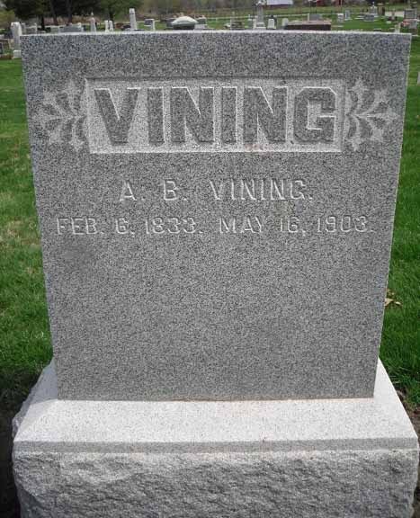
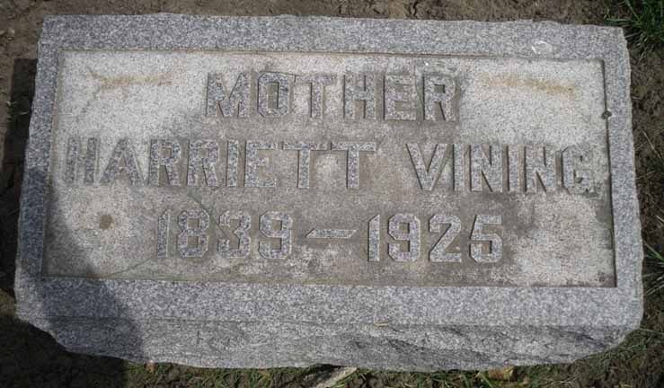
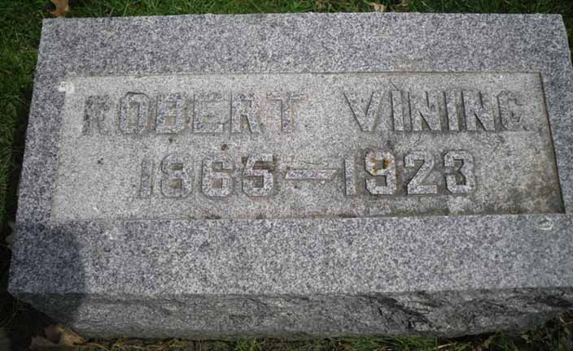

Census Data
| 1860 | 1870 | 1880 | 1890 | 1900 | 1910 | 1920 | 1930 | |
| Albert Bela Vining | 27 | 37 | ? | ? | 67 | dead | ||
| Harriet (Finch) Vining | 20 | 30 | ? | ? | 60 | 70 [see note below] |
79 [see note below] |
dead |
| Mary Laduska Vining | 2 | 12 | ? | married [and living in separate household?] | ||||
| Myron Henry Vining | 4 months | 10 | ? | ? | [married and?] living in a separate household | |||
| Albert B. Vining | 8 | ? | ? | [married and?] living in a separate household | ||||
| Laura Virginia “Jennie” Vining | living in separate household | ? | married [and living in a separate household?] | 44 [see note below] |
54 [see note below] |
|||
| Robert S. Vining | 1 | ? | ? | 31 | ? | ? | ? |


Death Data
Gravestones for Albert Bela Vining and Harriet Finch, in the Woodbine Cemetery, Woodbine, Iowa (source: Find A Grave):

